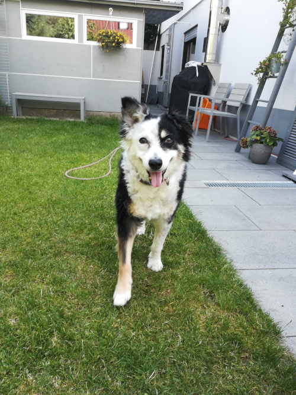
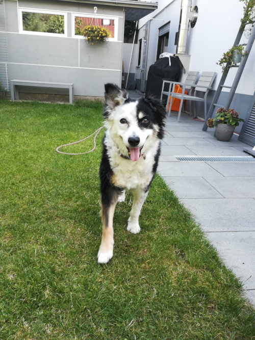

Ich heiße Thyra, bin 20 Jahre alt und komme aus Rümmingen. Ich studiere an der HFU in Furtwangen und wohne dort im Hospital.
Mein Hund heißt Balu und mein Auto Cutler. In meiner Freizeit mache ich gerne Musik, unternehme viel mit meinen Mitbewohnern und verbringe
erschreckend viel Zeit damit unsere Gesichter in Tierbilder zu photoshoppen. Hier ein paar Impressionen.
 

Das bin ich und mein Hund.
Ich studiere Medieninformatik im 2. Semester an der HFU. Ich beschäftige mich besonders gerne mit Computergrafik und User Experience Design.
Meine Lieblingskommilitonen sind Josue und Lukas weil sie so schlau und nett sind.